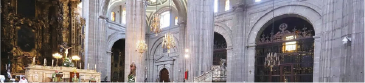
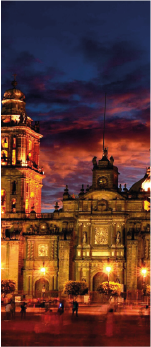

CATEDRAL METROPOLITANA

La historia de la Catedral Metropolitana se remonta al periodo colonial, cuando el conquistador español Hernán Cortés decidió construir una iglesia sobre el antiguo templo azteca dedicado a la diosa Tonantzin. La construcción comenzó en 1573 bajo la supervisión de diversos arquitectos, entre ellos Claudio de Arciniega, quien diseñó la fachada en estilo plateresco, y Juan Gómez de Trasmonte, responsable del proyecto inicial.
La diversidad de estilos arquitectónicos refleja las distintas etapas de construcción que abarcaron casi tres siglos. Arquitectura Impresionante: La fachada de la Catedral Metropolitana es una obra de arte en sí misma. Con sus detalladas esculturas y relieves, muestra la habilidad de los artistas de la época para combinar la espiritualidad con la estética.
Las torres gemelas, que se elevan majestuosamente hacia el cielo, son una parte integral del perfil de la Ciudad de México y ofrecen una vista panorámica impresionante desde su cima. El interior de la catedral es igualmente impresionante, con altares tallados en madera dorada, capillas laterales adornadas y una nave central que invita a la reflexión.
Entre sus numerosas capillas se destaca la Capilla del Pocito, dedicada a la Virgen de Guadalupe, cuya imagen se encuentra en el altar principal y es objeto de devoción para millones de fieles.
